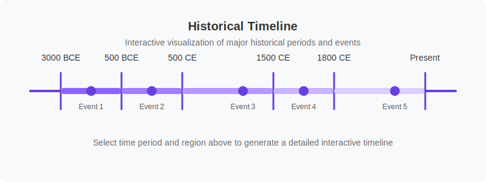

历史学习
在DeepSeek AI的指导下探索历史事件、文明和人物。分析历史背景，理解因果关系，了解各时期的事件联系。

探索历史主题
选择一个主题，开始使用AI辅助学习
古代文明
探索最早的人类社会，从美索不达米亚和埃及到希腊和罗马
中世纪
研究中世纪、封建制度和早期现代社会的发展
探索时代
发现连接大陆的航海旅程和随后的全球交流
革命时代
分析塑造现代世界的政治、工业和社会革命
世界大战
了解20世纪主要全球冲突的原因、事件和影响
现代历史
研究战后发展、冷战、非殖民化和当代全球问题
AI历史助手
获取历史问题、分析和研究的帮助
DeepSeek历史助手
时间线分析
了解历史事件之间的因果关系
史料分析
学习分析和解读历史一手和二手资料
历史背景
深入了解历史事件的广泛背景
通过AI测验练习
用DeepSeek AI生成的个性化测验测试你的历史知识
配置您的测验选项并点击"生成测验"开始练习。
时间线探索
可视化历史事件及其跨时间的联系

选择时间段和地区，然后点击"加载时间线"探索历史事件。
主要史料分析
在AI指导下学习分析和解读历史主要史料

选择史料类型和时间段，然后点击"加载史料"在AI指导下进行分析练习。